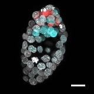
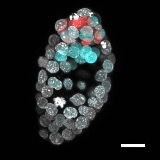
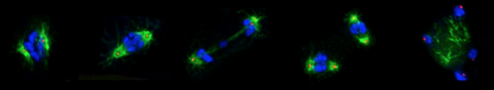
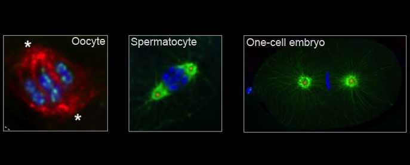
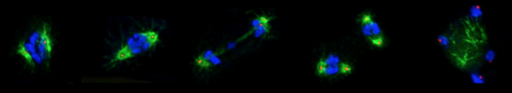
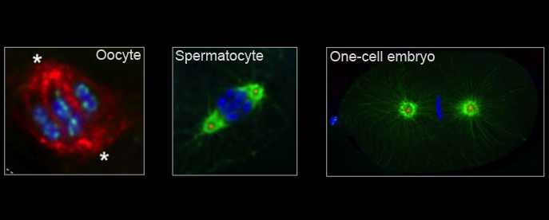

Education Workshop

 



Keynote Speakers: Monica Driscoll & Len Zon


 



Important Dates
NESDB-2017 Meeting
April 27-30, 2017
Abstract Deadline (for talk consideration)
February 19
Abstract Deadline (for poster only)
March 11
Registration
March 20
MBL Meals/Housing Deadline
March 20